The edge-on slice of every close-packed stacking as a knitted pattern
Stack oranges in layers and cut the pile straight down with a very sharp knife. On the cut face you see the oranges in rows, each layer shifted a little to the side of the one below, and between them small triangles and diamonds of empty space. Colour the triangles and diamonds, and the cut face becomes a pattern a knitter can follow, stitch by stitch, row by row.
Layers of balls. Equal balls packed as tightly as possible in a flat layer touch six neighbours each; the centres form a triangular grid. The next layer rests in the hollows of the first, and there are two kinds of hollow. With three positions in all, called A, B and C, every close-packed crystal is a word in these letters with no letter repeated next to itself: ABCABC… is the cubic (face-centred) packing 3C, ABAB… the hexagonal packing 2H, ABCB… the four-layer 4H, ABCACB… the six-layer 6H. A layer is c (cubic) when its two neighbours differ, as B in ABC, and h (hexagonal) when they agree, as B in ABA; the stacking is equally well written as its word of c and h. The share of h layers is its hexagonality: 0 for 3C, 1 for 2H, 1/2 for 4H, 1/3 for 6H.
The pieces. Between two layers the space left by the balls splits into tetrahedra (three balls below and one above, or one below and three above) and octahedra (three below and three above). DICTO's Rule of Halves (#57) cuts every such piece at the mid-plane between its two layers and gives the half nearer a layer to that layer; his HexOct tiles (#75) collect a layer's halves into one c-tile or h-tile. In the HexOct drawings the half of a c layer is gold and the half of an h layer blue; a piece whose two layers differ in kind (a Janus piece) is half gold and half blue.
The Hexagonality Law. DICTO's law, in the form he approved, is a law of structural crystallography: in every close-packed crystal structure, however its layers are stacked, every count of the structure (its pieces, holes, bonds and swaps) is a straight line in the structure's hexagonality (#69 and the book HexOct: The Hexagonality Law).
The idea (DICTO, 31 October 2026). Read the HexOct structure as a knitted fabric. The fabric is an exact edge-on slice through the stacking: stitch = ball, rows = layer; A, B and C appear as sideways offsets of 0, 1/3 and 2/3 of the repeat; the knitting places every layer by bias shifting (a decrease at one end of a row and an increase at the other move the row one stitch sideways); a c layer shifts the same way as the step before it and an h layer shifts back, so cubic knits as a straight bias slant and hexagonal as a chevron. Every area of the slice is coloured by the piece it belongs to, each half in its own layer's colour: gold for c, blue for h; tetrahedral pieces dark, octahedral pieces light.
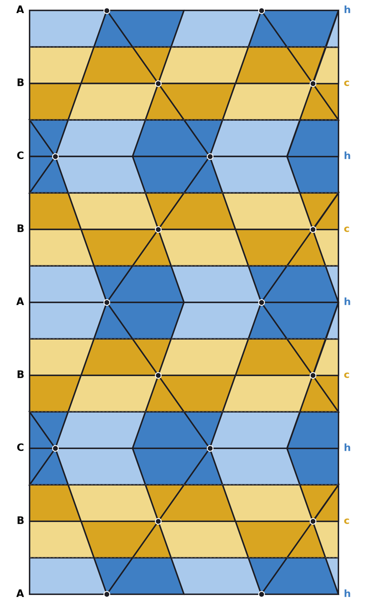
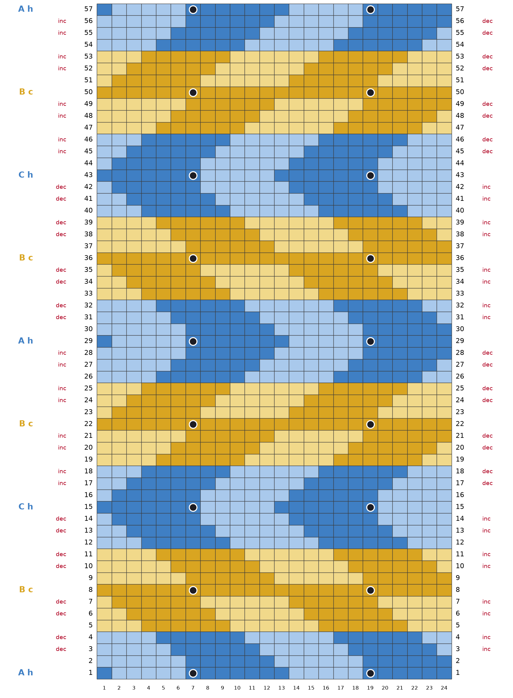
Ball spacing a = 1, layer spacing h = √(2/3). Take coordinates with the layers horizontal, the x-axis along a row of touching balls and the y-axis across it in the layer; then the A centres are (m + n/2, n√3/2, z), B = A + (1/2, √3/6, 0) and C = A + (1, √3/3, 0). Let P be the vertical plane x = 0, perpendicular to a row of touching balls: a {11-20} plane, seen along ⟨11-20⟩. On P use the sideways coordinate s = −y.
Theorem 1 (the slice). For every close-packed stacking: (a) P meets each layer in exactly one ball centre per repeat √3, at s = 0, √3/3, 2√3/3 (0, 1/3, 2/3 of the repeat) for A, B, C; every other ball centre lies at distance 1/2, so those balls touch P at one point only. (b) P is a mirror plane of the stacking. Every tetrahedron that P cuts meets it in an isosceles triangle with sides 1, √3/2, √3/2 (angles 70.53°, 54.74°, 54.74°) whose side 1 is a whole edge joining touching balls of the two layers; every octahedron that P cuts meets it in a rhombus of side √3/2 and angles arccos(1/3) = 70.53° and 109.47°, with two sides in the layer planes. (c) The mid-planes cut each triangle into a small triangle (1/2, √3/4, √3/4) at its tip and a trapezoid (√3/2, √3/4, 1/2, √3/4) at its base, and each rhombus into two congruent parallelograms (√3/2, √3/4): these are the halves of the Rule of Halves, and they tile the slice. (d) In the band of every layer (from the mid-plane below to the mid-plane above) the tetrahedral and the octahedral halves have equal area. So exactly half of the slice is dark and half light, and the blue share is exactly the hexagonality.
Proof. (a) A centre lies on P when m + n/2 = 0 for A, m + n/2 + 1/2 = 0 for B and m + n/2 + 1 = 0 for C, that is n even for A and C and n odd for B. Then y = n√3/2 runs through multiples of √3 for A, and y = n√3/2 + √3/6 (n odd) and y = n√3/2 + √3/3 (n even) give s ≡ √3/3 and 2√3/3 modulo √3 for B and C. All other centres have x a nonzero multiple of 1/2, so they are at least 1/2, one ball radius, from P. (b) x ↦ −x maps each layer's set of centres to itself (for A, (m, n) ↦ (−m−n, n); for B and C the same with the shift absorbed), so it is a symmetry of every stacking and of its tiling by pieces. A piece that P cuts in a region of positive area meets its own mirror image in that region, so it is its own mirror image, and P is one of its mirror planes. The mirror planes of a regular tetrahedron of edge 1 each contain one edge and the midpoint of the opposite edge, giving the triangle 1, √3/2, √3/2. A regular octahedron has mirror planes of two kinds: through four corners, cutting a square, and through two opposite corners and the midpoints of two opposite edges, cutting a rhombus of side √3/2 with diagonals √2 and 1. The octahedra of a close packing have a three-fold axis along the stacking direction, and the square planes, each perpendicular to a four-fold axis, are tilted to it; P is vertical, so it is of the second kind. (c) The mid-plane lies at half the height of every piece; in the triangle it cuts the two sides √3/2 at their midpoints, leaving a similar triangle of half size at the tip; in the rhombus it joins the midpoints of the two slanting sides. The pieces tile space, so their sections tile P, and so do their halves. (d) The triangle has area √2/4, its tip triangle √2/16 and its base trapezoid 3√2/16; the rhombus has area √2/2 and each parallelogram √2/4. Per repeat, a gap holds one area √3·h = √2; by the exact computation (Section 3) it holds one rhombus and two triangles, one standing on the lower layer and one hanging from the upper. The lower half of the gap is then a base trapezoid, a tip triangle and a parallelogram: 3√2/16 + √2/16 = √2/4 dark against √2/4 light, and the same for the upper half. So every half-gap, and every layer band, is half dark and half light; and every band has the same area √2 per repeat, so the blue share is the share of h layers. ∎
Theorem 2 (bias placement). Let a chart repeat be 3k stitches and move the knitting k stitches sideways across every gap, to the right when the stacking steps A→B, B→C or C→A and to the left otherwise. Then (a) the ball stitches of every layer fall in the same chart columns; and (b) the step out of a c layer goes the same way as the step into it, and the step out of an h layer goes back: a run of c layers knits as one straight slant, a run of h layers as a zigzag (chevron).
Proof. (a) By Theorem 1(a) a step to the next letter in the cycle A→B→C→A moves the ball centres by +1/3 of the repeat and a step back by −1/3; the chart moves by ±k stitches = ±1/3 of 3k, the same amount, so the true position of a ball stitch minus the accumulated shift is the same for all layers. (b) If layer k is h, layer k+1 repeats layer k−1, so the step out undoes the step in. If it is c, layers k−1, k, k+1 are the three different letters, so the step out continues around the cycle in the same direction. ∎
So a stacking's word of c and h is read directly as its knitting: c means "keep going", h means "turn back". Over a cubic stretch the shifts add up, and a 3C fabric leans by k stitches per layer; a hexagonal stretch returns to its column every two layers.
Pieces. The pieces are the classical tetrahedra and octahedra of the close packing (the HexOct pieces at weight
λ = −1/8 of #75, the ones DICTO's ring builds use). For each gap, up-tetrahedra, down-tetrahedra and octahedra are built from
the exact centres; the section of each with P is computed in exact rational coordinates (s in units of √3/6, height in
units of h), cut at the mid-plane, and coloured by its layer. Checks, all exact: the halves cover the window exactly once
(4H: area 96 = 96 in these units); the whole sections are exactly the triangle and the rhombus of Theorem 1 (table of all
sections with corners, sides and angles in pieces-in-slice.json); every layer band has equal tetrahedral and
octahedral area for 4H, 3C, 2H, 6H and the Fibonacci stacking (areas.py).
Gauge. The true ratio of repeat to layer height is √3 : √(2/3) = 3/√2 = 2.121. With a repeat of 12 stitches (k = 4), 7 rows per layer and stitches 5 wide to 4 tall (a common stockinette gauge, e.g. 22 stitches and 28 rows to 10 cm), the chart gives 12 × 1.25 / 7 = 2.143, 1.0 % wide. The ball row of layer k is row 7k + 1, so each mid-plane falls on a row boundary and the halves change between rows. Across each gap the 4 bias rows are gap rows 2, 3, 5 and 6, symmetric about the mid-plane.
Chart. Each stitch takes the colour that covers most of it (4 × 4 sample points); where two colours cover exactly half each, which happens mainly in the ball rows, the dark shade is taken. This choice changes shade only, never hue, and it is why the charts count somewhat more dark than light stitches although the exact areas are equal (Theorem 1(d)). The chart is drawn in the knitted grid: the true position of a stitch is its chart column plus the shift accumulated by the bias rows. The 24-stitch window starts half a repeat after a ball, so the ball stitches, knitted as bobbles, sit at stitches 7 and 19, away from the edges. A knitter needs four colours: dark gold, light gold, dark blue, light blue (a purely cubic or purely hexagonal stacking needs two).
hexknit.py takes a stacking as a word of c and h or of A, B and C (repeated) and a number of layers, and
writes the exact slice, the chart, the row-by-row instructions (colour runs in working order, bias edges, bobbles) and a
printable swatch sheet:
hexknit.py --ch hchc --layers 5 --name 4H · --abc ABC --layers 7 --name 3C ·
--ch chcchchcchcch --layers 13 --name Fibonacci
Its 4H output is identical, row by row, to the first 4H swatch sheet, made before the generator.
| Swatch | Stacking (c/h) | Layers | Stitches × rows | Colours | Character |
|---|---|---|---|---|---|
| 4H | ABCBA (hchch) | 5 | 24 × 29 | 4 | alternating gold and blue bands; R R then L L: a zigzag of period four layers |
| 3C | ABCABCA (all c) | 7 | 24 × 43 | 2 (gold) | bias always right: one straight slant, 24 stitches over the swatch |
| 2H | ABABA (all h) | 5 | 24 × 29 | 2 (blue) | right, left, right, left: the simplest chevron |
| 6H | ABCACBA (hcchcc) | 7 | 24 × 43 | 4 | two-layer slants turning at each h layer |
| Fibonacci | ABACBCACBABCA (chcchchcchcch) | 13 | 24 × 85 | 4 | never-repeating: slants of one and two steps in the Fibonacci order |
The Fibonacci word is the one of #69 (c → ch, h → c), its first 13 letters. The swatches are given in full in the appendix. None has been knitted yet: they are an invitation, and photographs of the knitted swatches will follow. The swatches will test whether the bias rows place the fabric as Theorem 2 assumes at this gauge, and how the colours read.
We looked for the idea (a knitted fabric as the exact edge-on slice of a close-packed stacking, placed by bias shifts, coloured by the Rule-of-Halves pieces) and for its parts. Sources checked:
Verdict. We found nowhere a knitted fabric used as an exact slice of a close-packed stacking, nor bias shifts used to place its layers, nor its colouring by the pieces between the balls. Knitted models of crystals (Crum Brown) and mathematical knitting of surfaces and lattices exist; the slice, the bias rule and the colouring are new as far as these sources show.
One plane, perpendicular to a row of touching balls, turns every close-packed stacking into a flat pattern of two shapes, triangles and rhombi, whose halves carry the colours of their layers in exactly equal dark and light shares; the c and h letters of the stacking become the knitter's "keep going" and "turn back". Status: theorems proved and checked exactly; generator done; five swatches charted, none knitted yet.
[#57] DICTO, The Rule of Halves: the Holes of Every Close-Packed Stacking, 2026, DICTO DOI: 10.5281/zenodo.23647898. [#69] DICTO, The Hexagonality Law and the Fibonacci Stacking, 2026, DICTO DOI: 10.5281/zenodo.23721038. [#75] DICTO, Two Tiles for Every Stacking, 2026, DICTO DOI: 10.5281/zenodo.23737639. DICTO, HexOct: The Hexagonality Law (book), 2026, DICTO DOI: 10.5281/zenodo.23823003. Prior-art sources as listed in Section 6.
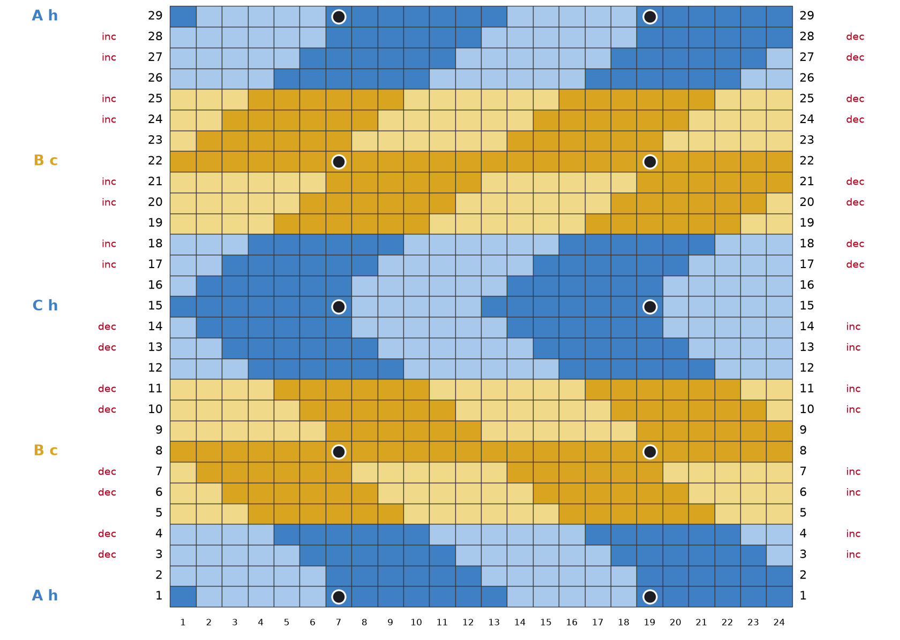
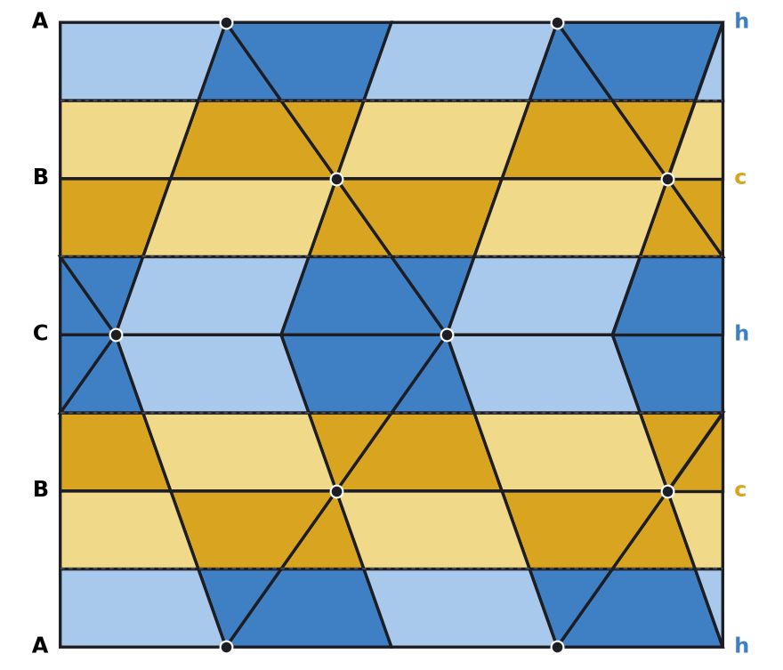
DG dark gold: 192 sts · LG light gold: 144 sts · DB dark blue: 186 sts · LB light blue: 174 sts. Total 696 stitches.
Cast on 24 sts in DB; row 1 is a RS row. Bias right (decrease at the left edge, increase at the right, seen from the RS): rows 3, 4, 6, 7, 10, 11, 13, 14. Bias left: rows 17, 18, 20, 21, 24, 25, 27, 28. Net shift at the top: +0 stitches. Bobbles on RS rows 1, 15, 29; on WS rows 8, 22. Bind off in DB on the WS after row 29.
| Row | Side | Colour runs (working order) | Bias (edge stitches) | Bobble |
|---|---|---|---|---|
| 1 | RS | 6 DB, 5 LB, 7 DB, 5 LB, 1 DB | MB at st 7, 19 | |
| 2 | WS | 6 LB, 6 DB, 6 LB, 6 DB | ||
| 3 | RS | 1 LB, 6 DB, 6 LB, 6 DB, 5 LB | bias right: k1, M1, … k2tog, k1 | |
| 4 | WS | 4 LB, 6 DB, 6 LB, 6 DB, 2 LB | bias right: p1, p2tog, … M1P, p1 | |
| 5 | RS | 3 LG, 6 DG, 6 LG, 6 DG, 3 LG | ||
| 6 | WS | 2 LG, 6 DG, 6 LG, 6 DG, 4 LG | bias right: p1, p2tog, … M1P, p1 | |
| 7 | RS | 5 LG, 6 DG, 6 LG, 6 DG, 1 LG | bias right: k1, M1, … k2tog, k1 | |
| 8 | WS | 24 DG | MB at st 7, 19 | |
| 9 | RS | 6 DG, 6 LG, 6 DG, 6 LG | ||
| 10 | WS | 5 LG, 6 DG, 6 LG, 6 DG, 1 LG | bias right: p1, p2tog, … M1P, p1 | |
| 11 | RS | 2 LG, 6 DG, 6 LG, 6 DG, 4 LG | bias right: k1, M1, … k2tog, k1 | |
| 12 | WS | 3 LB, 6 DB, 6 LB, 6 DB, 3 LB | ||
| 13 | RS | 4 LB, 6 DB, 6 LB, 6 DB, 2 LB | bias right: k1, M1, … k2tog, k1 | |
| 14 | WS | 1 LB, 6 DB, 6 LB, 6 DB, 5 LB | bias right: p1, p2tog, … M1P, p1 | |
| 15 | RS | 5 LB, 7 DB, 5 LB, 7 DB | MB at st 7, 19 | |
| 16 | WS | 1 LB, 6 DB, 6 LB, 6 DB, 5 LB | ||
| 17 | RS | 4 LB, 6 DB, 6 LB, 6 DB, 2 LB | bias left: k1, ssk, … M1, k1 | |
| 18 | WS | 3 LB, 6 DB, 6 LB, 6 DB, 3 LB | bias left: p1, M1P, … ssp, p1 | |
| 19 | RS | 2 LG, 6 DG, 6 LG, 6 DG, 4 LG | ||
| 20 | WS | 5 LG, 6 DG, 6 LG, 6 DG, 1 LG | bias left: p1, M1P, … ssp, p1 | |
| 21 | RS | 6 DG, 6 LG, 6 DG, 6 LG | bias left: k1, ssk, … M1, k1 | |
| 22 | WS | 24 DG | MB at st 7, 19 | |
| 23 | RS | 5 LG, 6 DG, 6 LG, 6 DG, 1 LG | ||
| 24 | WS | 2 LG, 6 DG, 6 LG, 6 DG, 4 LG | bias left: p1, M1P, … ssp, p1 | |
| 25 | RS | 3 LG, 6 DG, 6 LG, 6 DG, 3 LG | bias left: k1, ssk, … M1, k1 | |
| 26 | WS | 4 LB, 6 DB, 6 LB, 6 DB, 2 LB | ||
| 27 | RS | 1 LB, 6 DB, 6 LB, 6 DB, 5 LB | bias left: k1, ssk, … M1, k1 | |
| 28 | WS | 6 LB, 6 DB, 6 LB, 6 DB | bias left: p1, M1P, … ssp, p1 | |
| 29 | RS | 6 DB, 5 LB, 7 DB, 5 LB, 1 DB | MB at st 7, 19 |
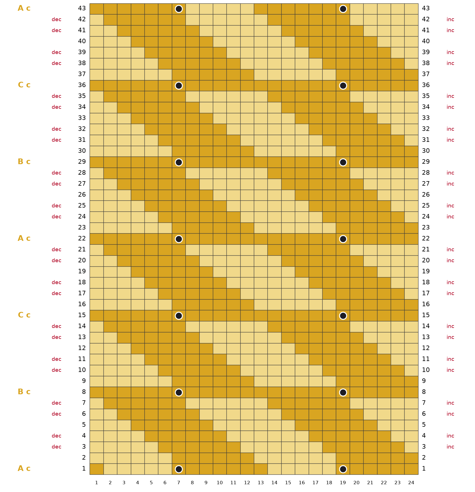
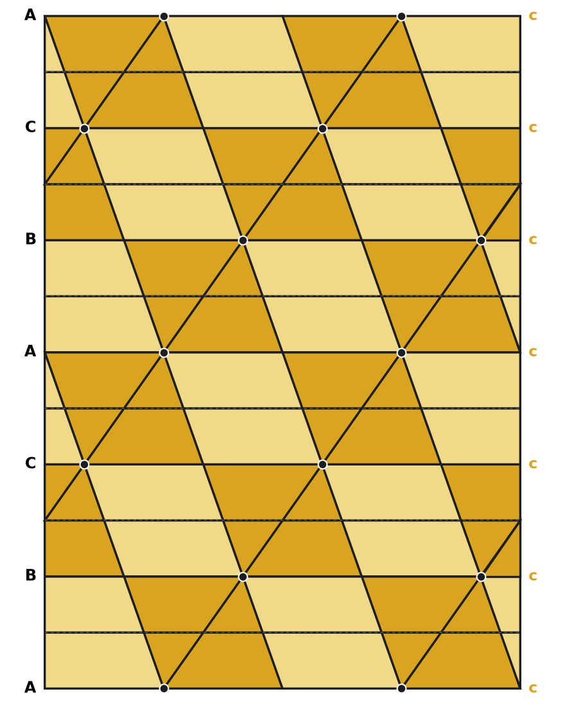
DG dark gold: 580 sts · LG light gold: 452 sts. Total 1032 stitches.
Cast on 24 sts in DG; row 1 is a RS row. Bias right (decrease at the left edge, increase at the right, seen from the RS): rows 3, 4, 6, 7, 10, 11, 13, 14, 17, 18, 20, 21, 24, 25, 27, 28, 31, 32, 34, 35, 38, 39, 41, 42. Bias left: rows none. Net shift at the top: +24 stitches. Bobbles on RS rows 1, 15, 29, 43; on WS rows 8, 22, 36. Bind off in LG on the WS after row 43.
| Row | Side | Colour runs (working order) | Bias (edge stitches) | Bobble |
|---|---|---|---|---|
| 1 | RS | 6 DG, 5 LG, 7 DG, 5 LG, 1 DG | MB at st 7, 19 | |
| 2 | WS | 6 LG, 6 DG, 6 LG, 6 DG | ||
| 3 | RS | 1 LG, 6 DG, 6 LG, 6 DG, 5 LG | bias right: k1, M1, … k2tog, k1 | |
| 4 | WS | 4 LG, 6 DG, 6 LG, 6 DG, 2 LG | bias right: p1, p2tog, … M1P, p1 | |
| 5 | RS | 3 LG, 6 DG, 6 LG, 6 DG, 3 LG | ||
| 6 | WS | 2 LG, 6 DG, 6 LG, 6 DG, 4 LG | bias right: p1, p2tog, … M1P, p1 | |
| 7 | RS | 5 LG, 6 DG, 6 LG, 6 DG, 1 LG | bias right: k1, M1, … k2tog, k1 | |
| 8 | WS | 24 DG | MB at st 7, 19 | |
| 9 | RS | 6 DG, 6 LG, 6 DG, 6 LG | ||
| 10 | WS | 5 LG, 6 DG, 6 LG, 6 DG, 1 LG | bias right: p1, p2tog, … M1P, p1 | |
| 11 | RS | 2 LG, 6 DG, 6 LG, 6 DG, 4 LG | bias right: k1, M1, … k2tog, k1 | |
| 12 | WS | 3 LG, 6 DG, 6 LG, 6 DG, 3 LG | ||
| 13 | RS | 4 LG, 6 DG, 6 LG, 6 DG, 2 LG | bias right: k1, M1, … k2tog, k1 | |
| 14 | WS | 1 LG, 6 DG, 6 LG, 6 DG, 5 LG | bias right: p1, p2tog, … M1P, p1 | |
| 15 | RS | 24 DG | MB at st 7, 19 | |
| 16 | WS | 6 LG, 6 DG, 6 LG, 6 DG | ||
| 17 | RS | 1 LG, 6 DG, 6 LG, 6 DG, 5 LG | bias right: k1, M1, … k2tog, k1 | |
| 18 | WS | 4 LG, 6 DG, 6 LG, 6 DG, 2 LG | bias right: p1, p2tog, … M1P, p1 | |
| 19 | RS | 3 LG, 6 DG, 6 LG, 6 DG, 3 LG | ||
| 20 | WS | 2 LG, 6 DG, 6 LG, 6 DG, 4 LG | bias right: p1, p2tog, … M1P, p1 | |
| 21 | RS | 5 LG, 6 DG, 6 LG, 6 DG, 1 LG | bias right: k1, M1, … k2tog, k1 | |
| 22 | WS | 24 DG | MB at st 7, 19 | |
| 23 | RS | 6 DG, 6 LG, 6 DG, 6 LG | ||
| 24 | WS | 5 LG, 6 DG, 6 LG, 6 DG, 1 LG | bias right: p1, p2tog, … M1P, p1 | |
| 25 | RS | 2 LG, 6 DG, 6 LG, 6 DG, 4 LG | bias right: k1, M1, … k2tog, k1 | |
| 26 | WS | 3 LG, 6 DG, 6 LG, 6 DG, 3 LG | ||
| 27 | RS | 4 LG, 6 DG, 6 LG, 6 DG, 2 LG | bias right: k1, M1, … k2tog, k1 | |
| 28 | WS | 1 LG, 6 DG, 6 LG, 6 DG, 5 LG | bias right: p1, p2tog, … M1P, p1 | |
| 29 | RS | 24 DG | MB at st 7, 19 | |
| 30 | WS | 6 LG, 6 DG, 6 LG, 6 DG | ||
| 31 | RS | 1 LG, 6 DG, 6 LG, 6 DG, 5 LG | bias right: k1, M1, … k2tog, k1 | |
| 32 | WS | 4 LG, 6 DG, 6 LG, 6 DG, 2 LG | bias right: p1, p2tog, … M1P, p1 | |
| 33 | RS | 3 LG, 6 DG, 6 LG, 6 DG, 3 LG | ||
| 34 | WS | 2 LG, 6 DG, 6 LG, 6 DG, 4 LG | bias right: p1, p2tog, … M1P, p1 | |
| 35 | RS | 5 LG, 6 DG, 6 LG, 6 DG, 1 LG | bias right: k1, M1, … k2tog, k1 | |
| 36 | WS | 24 DG | MB at st 7, 19 | |
| 37 | RS | 6 DG, 6 LG, 6 DG, 6 LG | ||
| 38 | WS | 5 LG, 6 DG, 6 LG, 6 DG, 1 LG | bias right: p1, p2tog, … M1P, p1 | |
| 39 | RS | 2 LG, 6 DG, 6 LG, 6 DG, 4 LG | bias right: k1, M1, … k2tog, k1 | |
| 40 | WS | 3 LG, 6 DG, 6 LG, 6 DG, 3 LG | ||
| 41 | RS | 4 LG, 6 DG, 6 LG, 6 DG, 2 LG | bias right: k1, M1, … k2tog, k1 | |
| 42 | WS | 1 LG, 6 DG, 6 LG, 6 DG, 5 LG | bias right: p1, p2tog, … M1P, p1 | |
| 43 | RS | 5 LG, 7 DG, 5 LG, 7 DG | MB at st 7, 19 |
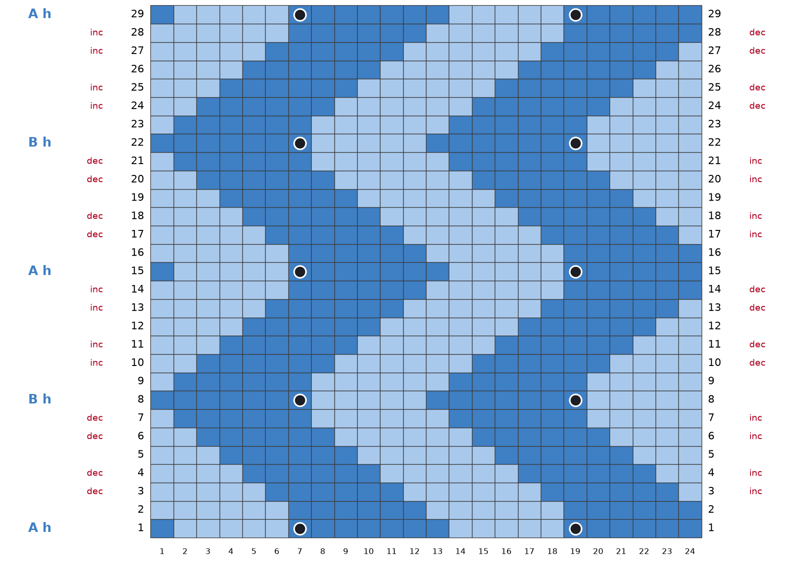
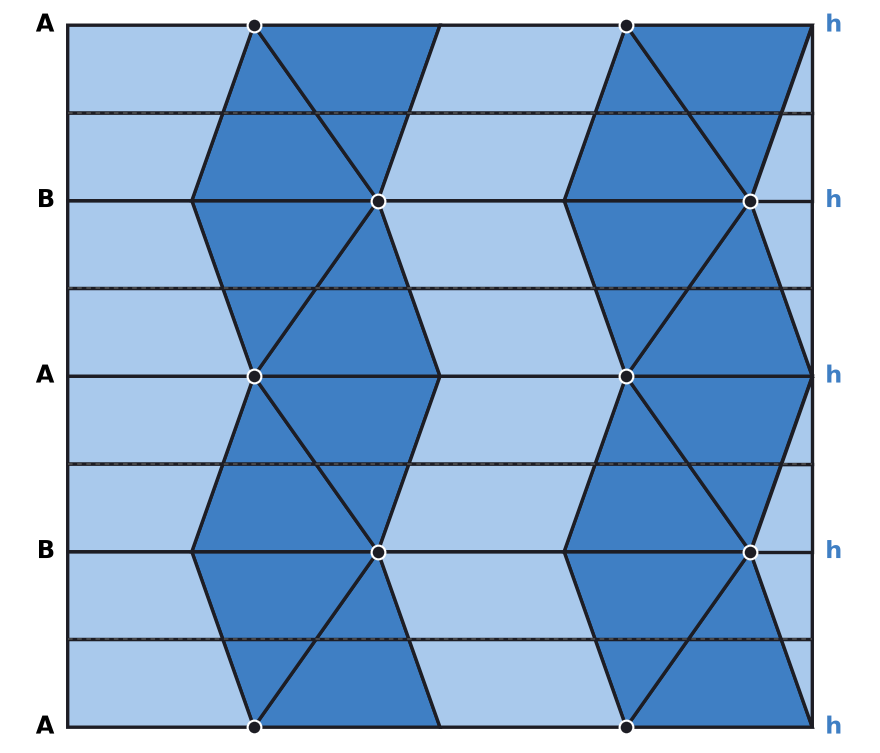
DB dark blue: 358 sts · LB light blue: 338 sts. Total 696 stitches.
Cast on 24 sts in DB; row 1 is a RS row. Bias right (decrease at the left edge, increase at the right, seen from the RS): rows 3, 4, 6, 7, 17, 18, 20, 21. Bias left: rows 10, 11, 13, 14, 24, 25, 27, 28. Net shift at the top: +0 stitches. Bobbles on RS rows 1, 15, 29; on WS rows 8, 22. Bind off in DB on the WS after row 29.
| Row | Side | Colour runs (working order) | Bias (edge stitches) | Bobble |
|---|---|---|---|---|
| 1 | RS | 6 DB, 5 LB, 7 DB, 5 LB, 1 DB | MB at st 7, 19 | |
| 2 | WS | 6 LB, 6 DB, 6 LB, 6 DB | ||
| 3 | RS | 1 LB, 6 DB, 6 LB, 6 DB, 5 LB | bias right: k1, M1, … k2tog, k1 | |
| 4 | WS | 4 LB, 6 DB, 6 LB, 6 DB, 2 LB | bias right: p1, p2tog, … M1P, p1 | |
| 5 | RS | 3 LB, 6 DB, 6 LB, 6 DB, 3 LB | ||
| 6 | WS | 2 LB, 6 DB, 6 LB, 6 DB, 4 LB | bias right: p1, p2tog, … M1P, p1 | |
| 7 | RS | 5 LB, 6 DB, 6 LB, 6 DB, 1 LB | bias right: k1, M1, … k2tog, k1 | |
| 8 | WS | 7 DB, 5 LB, 7 DB, 5 LB | MB at st 7, 19 | |
| 9 | RS | 5 LB, 6 DB, 6 LB, 6 DB, 1 LB | ||
| 10 | WS | 2 LB, 6 DB, 6 LB, 6 DB, 4 LB | bias left: p1, M1P, … ssp, p1 | |
| 11 | RS | 3 LB, 6 DB, 6 LB, 6 DB, 3 LB | bias left: k1, ssk, … M1, k1 | |
| 12 | WS | 4 LB, 6 DB, 6 LB, 6 DB, 2 LB | ||
| 13 | RS | 1 LB, 6 DB, 6 LB, 6 DB, 5 LB | bias left: k1, ssk, … M1, k1 | |
| 14 | WS | 6 LB, 6 DB, 6 LB, 6 DB | bias left: p1, M1P, … ssp, p1 | |
| 15 | RS | 6 DB, 5 LB, 7 DB, 5 LB, 1 DB | MB at st 7, 19 | |
| 16 | WS | 6 LB, 6 DB, 6 LB, 6 DB | ||
| 17 | RS | 1 LB, 6 DB, 6 LB, 6 DB, 5 LB | bias right: k1, M1, … k2tog, k1 | |
| 18 | WS | 4 LB, 6 DB, 6 LB, 6 DB, 2 LB | bias right: p1, p2tog, … M1P, p1 | |
| 19 | RS | 3 LB, 6 DB, 6 LB, 6 DB, 3 LB | ||
| 20 | WS | 2 LB, 6 DB, 6 LB, 6 DB, 4 LB | bias right: p1, p2tog, … M1P, p1 | |
| 21 | RS | 5 LB, 6 DB, 6 LB, 6 DB, 1 LB | bias right: k1, M1, … k2tog, k1 | |
| 22 | WS | 7 DB, 5 LB, 7 DB, 5 LB | MB at st 7, 19 | |
| 23 | RS | 5 LB, 6 DB, 6 LB, 6 DB, 1 LB | ||
| 24 | WS | 2 LB, 6 DB, 6 LB, 6 DB, 4 LB | bias left: p1, M1P, … ssp, p1 | |
| 25 | RS | 3 LB, 6 DB, 6 LB, 6 DB, 3 LB | bias left: k1, ssk, … M1, k1 | |
| 26 | WS | 4 LB, 6 DB, 6 LB, 6 DB, 2 LB | ||
| 27 | RS | 1 LB, 6 DB, 6 LB, 6 DB, 5 LB | bias left: k1, ssk, … M1, k1 | |
| 28 | WS | 6 LB, 6 DB, 6 LB, 6 DB | bias left: p1, M1P, … ssp, p1 | |
| 29 | RS | 6 DB, 5 LB, 7 DB, 5 LB, 1 DB | MB at st 7, 19 |
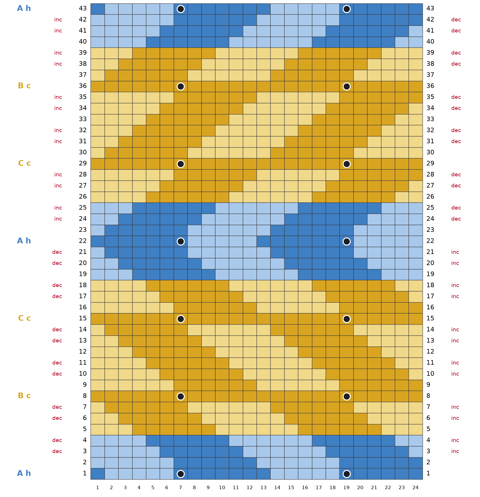
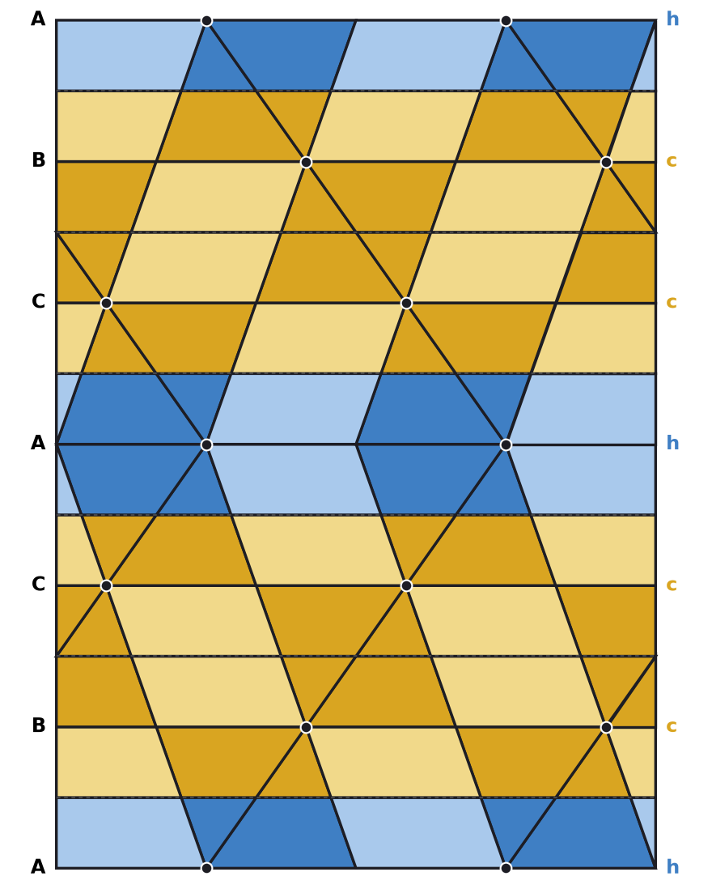
DG dark gold: 384 sts · LG light gold: 288 sts · DB dark blue: 186 sts · LB light blue: 174 sts. Total 1032 stitches.
Cast on 24 sts in DB; row 1 is a RS row. Bias right (decrease at the left edge, increase at the right, seen from the RS): rows 3, 4, 6, 7, 10, 11, 13, 14, 17, 18, 20, 21. Bias left: rows 24, 25, 27, 28, 31, 32, 34, 35, 38, 39, 41, 42. Net shift at the top: +0 stitches. Bobbles on RS rows 1, 15, 29, 43; on WS rows 8, 22, 36. Bind off in DB on the WS after row 43.
| Row | Side | Colour runs (working order) | Bias (edge stitches) | Bobble |
|---|---|---|---|---|
| 1 | RS | 6 DB, 5 LB, 7 DB, 5 LB, 1 DB | MB at st 7, 19 | |
| 2 | WS | 6 LB, 6 DB, 6 LB, 6 DB | ||
| 3 | RS | 1 LB, 6 DB, 6 LB, 6 DB, 5 LB | bias right: k1, M1, … k2tog, k1 | |
| 4 | WS | 4 LB, 6 DB, 6 LB, 6 DB, 2 LB | bias right: p1, p2tog, … M1P, p1 | |
| 5 | RS | 3 LG, 6 DG, 6 LG, 6 DG, 3 LG | ||
| 6 | WS | 2 LG, 6 DG, 6 LG, 6 DG, 4 LG | bias right: p1, p2tog, … M1P, p1 | |
| 7 | RS | 5 LG, 6 DG, 6 LG, 6 DG, 1 LG | bias right: k1, M1, … k2tog, k1 | |
| 8 | WS | 24 DG | MB at st 7, 19 | |
| 9 | RS | 6 DG, 6 LG, 6 DG, 6 LG | ||
| 10 | WS | 5 LG, 6 DG, 6 LG, 6 DG, 1 LG | bias right: p1, p2tog, … M1P, p1 | |
| 11 | RS | 2 LG, 6 DG, 6 LG, 6 DG, 4 LG | bias right: k1, M1, … k2tog, k1 | |
| 12 | WS | 3 LG, 6 DG, 6 LG, 6 DG, 3 LG | ||
| 13 | RS | 4 LG, 6 DG, 6 LG, 6 DG, 2 LG | bias right: k1, M1, … k2tog, k1 | |
| 14 | WS | 1 LG, 6 DG, 6 LG, 6 DG, 5 LG | bias right: p1, p2tog, … M1P, p1 | |
| 15 | RS | 24 DG | MB at st 7, 19 | |
| 16 | WS | 6 LG, 6 DG, 6 LG, 6 DG | ||
| 17 | RS | 1 LG, 6 DG, 6 LG, 6 DG, 5 LG | bias right: k1, M1, … k2tog, k1 | |
| 18 | WS | 4 LG, 6 DG, 6 LG, 6 DG, 2 LG | bias right: p1, p2tog, … M1P, p1 | |
| 19 | RS | 3 LB, 6 DB, 6 LB, 6 DB, 3 LB | ||
| 20 | WS | 2 LB, 6 DB, 6 LB, 6 DB, 4 LB | bias right: p1, p2tog, … M1P, p1 | |
| 21 | RS | 5 LB, 6 DB, 6 LB, 6 DB, 1 LB | bias right: k1, M1, … k2tog, k1 | |
| 22 | WS | 7 DB, 5 LB, 7 DB, 5 LB | MB at st 7, 19 | |
| 23 | RS | 5 LB, 6 DB, 6 LB, 6 DB, 1 LB | ||
| 24 | WS | 2 LB, 6 DB, 6 LB, 6 DB, 4 LB | bias left: p1, M1P, … ssp, p1 | |
| 25 | RS | 3 LB, 6 DB, 6 LB, 6 DB, 3 LB | bias left: k1, ssk, … M1, k1 | |
| 26 | WS | 4 LG, 6 DG, 6 LG, 6 DG, 2 LG | ||
| 27 | RS | 1 LG, 6 DG, 6 LG, 6 DG, 5 LG | bias left: k1, ssk, … M1, k1 | |
| 28 | WS | 6 LG, 6 DG, 6 LG, 6 DG | bias left: p1, M1P, … ssp, p1 | |
| 29 | RS | 24 DG | MB at st 7, 19 | |
| 30 | WS | 1 LG, 6 DG, 6 LG, 6 DG, 5 LG | ||
| 31 | RS | 4 LG, 6 DG, 6 LG, 6 DG, 2 LG | bias left: k1, ssk, … M1, k1 | |
| 32 | WS | 3 LG, 6 DG, 6 LG, 6 DG, 3 LG | bias left: p1, M1P, … ssp, p1 | |
| 33 | RS | 2 LG, 6 DG, 6 LG, 6 DG, 4 LG | ||
| 34 | WS | 5 LG, 6 DG, 6 LG, 6 DG, 1 LG | bias left: p1, M1P, … ssp, p1 | |
| 35 | RS | 6 DG, 6 LG, 6 DG, 6 LG | bias left: k1, ssk, … M1, k1 | |
| 36 | WS | 24 DG | MB at st 7, 19 | |
| 37 | RS | 5 LG, 6 DG, 6 LG, 6 DG, 1 LG | ||
| 38 | WS | 2 LG, 6 DG, 6 LG, 6 DG, 4 LG | bias left: p1, M1P, … ssp, p1 | |
| 39 | RS | 3 LG, 6 DG, 6 LG, 6 DG, 3 LG | bias left: k1, ssk, … M1, k1 | |
| 40 | WS | 4 LB, 6 DB, 6 LB, 6 DB, 2 LB | ||
| 41 | RS | 1 LB, 6 DB, 6 LB, 6 DB, 5 LB | bias left: k1, ssk, … M1, k1 | |
| 42 | WS | 6 LB, 6 DB, 6 LB, 6 DB | bias left: p1, M1P, … ssp, p1 | |
| 43 | RS | 6 DB, 5 LB, 7 DB, 5 LB, 1 DB | MB at st 7, 19 |
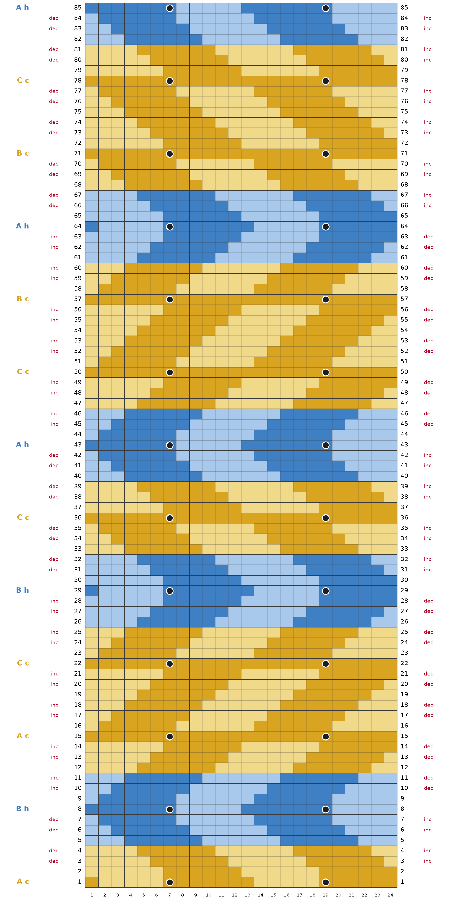
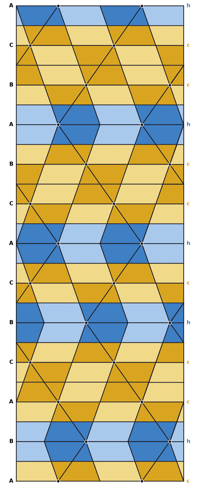
DG dark gold: 722 sts · LG light gold: 550 sts · DB dark blue: 394 sts · LB light blue: 374 sts. Total 2040 stitches.
Cast on 24 sts in DG; row 1 is a RS row. Bias right (decrease at the left edge, increase at the right, seen from the RS): rows 3, 4, 6, 7, 31, 32, 34, 35, 38, 39, 41, 42, 66, 67, 69, 70, 73, 74, 76, 77, 80, 81, 83, 84. Bias left: rows 10, 11, 13, 14, 17, 18, 20, 21, 24, 25, 27, 28, 45, 46, 48, 49, 52, 53, 55, 56, 59, 60, 62, 63. Net shift at the top: +0 stitches. Bobbles on RS rows 1, 15, 29, 43, 57, 71, 85; on WS rows 8, 22, 36, 50, 64, 78. Bind off in LB on the WS after row 85.
| Row | Side | Colour runs (working order) | Bias (edge stitches) | Bobble |
|---|---|---|---|---|
| 1 | RS | 6 DG, 5 LG, 7 DG, 5 LG, 1 DG | MB at st 7, 19 | |
| 2 | WS | 6 LG, 6 DG, 6 LG, 6 DG | ||
| 3 | RS | 1 LG, 6 DG, 6 LG, 6 DG, 5 LG | bias right: k1, M1, … k2tog, k1 | |
| 4 | WS | 4 LG, 6 DG, 6 LG, 6 DG, 2 LG | bias right: p1, p2tog, … M1P, p1 | |
| 5 | RS | 3 LB, 6 DB, 6 LB, 6 DB, 3 LB | ||
| 6 | WS | 2 LB, 6 DB, 6 LB, 6 DB, 4 LB | bias right: p1, p2tog, … M1P, p1 | |
| 7 | RS | 5 LB, 6 DB, 6 LB, 6 DB, 1 LB | bias right: k1, M1, … k2tog, k1 | |
| 8 | WS | 7 DB, 5 LB, 7 DB, 5 LB | MB at st 7, 19 | |
| 9 | RS | 5 LB, 6 DB, 6 LB, 6 DB, 1 LB | ||
| 10 | WS | 2 LB, 6 DB, 6 LB, 6 DB, 4 LB | bias left: p1, M1P, … ssp, p1 | |
| 11 | RS | 3 LB, 6 DB, 6 LB, 6 DB, 3 LB | bias left: k1, ssk, … M1, k1 | |
| 12 | WS | 4 LG, 6 DG, 6 LG, 6 DG, 2 LG | ||
| 13 | RS | 1 LG, 6 DG, 6 LG, 6 DG, 5 LG | bias left: k1, ssk, … M1, k1 | |
| 14 | WS | 6 LG, 6 DG, 6 LG, 6 DG | bias left: p1, M1P, … ssp, p1 | |
| 15 | RS | 24 DG | MB at st 7, 19 | |
| 16 | WS | 1 LG, 6 DG, 6 LG, 6 DG, 5 LG | ||
| 17 | RS | 4 LG, 6 DG, 6 LG, 6 DG, 2 LG | bias left: k1, ssk, … M1, k1 | |
| 18 | WS | 3 LG, 6 DG, 6 LG, 6 DG, 3 LG | bias left: p1, M1P, … ssp, p1 | |
| 19 | RS | 2 LG, 6 DG, 6 LG, 6 DG, 4 LG | ||
| 20 | WS | 5 LG, 6 DG, 6 LG, 6 DG, 1 LG | bias left: p1, M1P, … ssp, p1 | |
| 21 | RS | 6 DG, 6 LG, 6 DG, 6 LG | bias left: k1, ssk, … M1, k1 | |
| 22 | WS | 24 DG | MB at st 7, 19 | |
| 23 | RS | 5 LG, 6 DG, 6 LG, 6 DG, 1 LG | ||
| 24 | WS | 2 LG, 6 DG, 6 LG, 6 DG, 4 LG | bias left: p1, M1P, … ssp, p1 | |
| 25 | RS | 3 LG, 6 DG, 6 LG, 6 DG, 3 LG | bias left: k1, ssk, … M1, k1 | |
| 26 | WS | 4 LB, 6 DB, 6 LB, 6 DB, 2 LB | ||
| 27 | RS | 1 LB, 6 DB, 6 LB, 6 DB, 5 LB | bias left: k1, ssk, … M1, k1 | |
| 28 | WS | 6 LB, 6 DB, 6 LB, 6 DB | bias left: p1, M1P, … ssp, p1 | |
| 29 | RS | 6 DB, 5 LB, 7 DB, 5 LB, 1 DB | MB at st 7, 19 | |
| 30 | WS | 6 LB, 6 DB, 6 LB, 6 DB | ||
| 31 | RS | 1 LB, 6 DB, 6 LB, 6 DB, 5 LB | bias right: k1, M1, … k2tog, k1 | |
| 32 | WS | 4 LB, 6 DB, 6 LB, 6 DB, 2 LB | bias right: p1, p2tog, … M1P, p1 | |
| 33 | RS | 3 LG, 6 DG, 6 LG, 6 DG, 3 LG | ||
| 34 | WS | 2 LG, 6 DG, 6 LG, 6 DG, 4 LG | bias right: p1, p2tog, … M1P, p1 | |
| 35 | RS | 5 LG, 6 DG, 6 LG, 6 DG, 1 LG | bias right: k1, M1, … k2tog, k1 | |
| 36 | WS | 24 DG | MB at st 7, 19 | |
| 37 | RS | 6 DG, 6 LG, 6 DG, 6 LG | ||
| 38 | WS | 5 LG, 6 DG, 6 LG, 6 DG, 1 LG | bias right: p1, p2tog, … M1P, p1 | |
| 39 | RS | 2 LG, 6 DG, 6 LG, 6 DG, 4 LG | bias right: k1, M1, … k2tog, k1 | |
| 40 | WS | 3 LB, 6 DB, 6 LB, 6 DB, 3 LB | ||
| 41 | RS | 4 LB, 6 DB, 6 LB, 6 DB, 2 LB | bias right: k1, M1, … k2tog, k1 | |
| 42 | WS | 1 LB, 6 DB, 6 LB, 6 DB, 5 LB | bias right: p1, p2tog, … M1P, p1 | |
| 43 | RS | 5 LB, 7 DB, 5 LB, 7 DB | MB at st 7, 19 | |
| 44 | WS | 1 LB, 6 DB, 6 LB, 6 DB, 5 LB | ||
| 45 | RS | 4 LB, 6 DB, 6 LB, 6 DB, 2 LB | bias left: k1, ssk, … M1, k1 | |
| 46 | WS | 3 LB, 6 DB, 6 LB, 6 DB, 3 LB | bias left: p1, M1P, … ssp, p1 | |
| 47 | RS | 2 LG, 6 DG, 6 LG, 6 DG, 4 LG | ||
| 48 | WS | 5 LG, 6 DG, 6 LG, 6 DG, 1 LG | bias left: p1, M1P, … ssp, p1 | |
| 49 | RS | 6 DG, 6 LG, 6 DG, 6 LG | bias left: k1, ssk, … M1, k1 | |
| 50 | WS | 24 DG | MB at st 7, 19 | |
| 51 | RS | 5 LG, 6 DG, 6 LG, 6 DG, 1 LG | ||
| 52 | WS | 2 LG, 6 DG, 6 LG, 6 DG, 4 LG | bias left: p1, M1P, … ssp, p1 | |
| 53 | RS | 3 LG, 6 DG, 6 LG, 6 DG, 3 LG | bias left: k1, ssk, … M1, k1 | |
| 54 | WS | 4 LG, 6 DG, 6 LG, 6 DG, 2 LG | ||
| 55 | RS | 1 LG, 6 DG, 6 LG, 6 DG, 5 LG | bias left: k1, ssk, … M1, k1 | |
| 56 | WS | 6 LG, 6 DG, 6 LG, 6 DG | bias left: p1, M1P, … ssp, p1 | |
| 57 | RS | 24 DG | MB at st 7, 19 | |
| 58 | WS | 1 LG, 6 DG, 6 LG, 6 DG, 5 LG | ||
| 59 | RS | 4 LG, 6 DG, 6 LG, 6 DG, 2 LG | bias left: k1, ssk, … M1, k1 | |
| 60 | WS | 3 LG, 6 DG, 6 LG, 6 DG, 3 LG | bias left: p1, M1P, … ssp, p1 | |
| 61 | RS | 2 LB, 6 DB, 6 LB, 6 DB, 4 LB | ||
| 62 | WS | 5 LB, 6 DB, 6 LB, 6 DB, 1 LB | bias left: p1, M1P, … ssp, p1 | |
| 63 | RS | 6 DB, 6 LB, 6 DB, 6 LB | bias left: k1, ssk, … M1, k1 | |
| 64 | WS | 1 DB, 5 LB, 7 DB, 5 LB, 6 DB | MB at st 7, 19 | |
| 65 | RS | 6 DB, 6 LB, 6 DB, 6 LB | ||
| 66 | WS | 5 LB, 6 DB, 6 LB, 6 DB, 1 LB | bias right: p1, p2tog, … M1P, p1 | |
| 67 | RS | 2 LB, 6 DB, 6 LB, 6 DB, 4 LB | bias right: k1, M1, … k2tog, k1 | |
| 68 | WS | 3 LG, 6 DG, 6 LG, 6 DG, 3 LG | ||
| 69 | RS | 4 LG, 6 DG, 6 LG, 6 DG, 2 LG | bias right: k1, M1, … k2tog, k1 | |
| 70 | WS | 1 LG, 6 DG, 6 LG, 6 DG, 5 LG | bias right: p1, p2tog, … M1P, p1 | |
| 71 | RS | 24 DG | MB at st 7, 19 | |
| 72 | WS | 6 LG, 6 DG, 6 LG, 6 DG | ||
| 73 | RS | 1 LG, 6 DG, 6 LG, 6 DG, 5 LG | bias right: k1, M1, … k2tog, k1 | |
| 74 | WS | 4 LG, 6 DG, 6 LG, 6 DG, 2 LG | bias right: p1, p2tog, … M1P, p1 | |
| 75 | RS | 3 LG, 6 DG, 6 LG, 6 DG, 3 LG | ||
| 76 | WS | 2 LG, 6 DG, 6 LG, 6 DG, 4 LG | bias right: p1, p2tog, … M1P, p1 | |
| 77 | RS | 5 LG, 6 DG, 6 LG, 6 DG, 1 LG | bias right: k1, M1, … k2tog, k1 | |
| 78 | WS | 24 DG | MB at st 7, 19 | |
| 79 | RS | 6 DG, 6 LG, 6 DG, 6 LG | ||
| 80 | WS | 5 LG, 6 DG, 6 LG, 6 DG, 1 LG | bias right: p1, p2tog, … M1P, p1 | |
| 81 | RS | 2 LG, 6 DG, 6 LG, 6 DG, 4 LG | bias right: k1, M1, … k2tog, k1 | |
| 82 | WS | 3 LB, 6 DB, 6 LB, 6 DB, 3 LB | ||
| 83 | RS | 4 LB, 6 DB, 6 LB, 6 DB, 2 LB | bias right: k1, M1, … k2tog, k1 | |
| 84 | WS | 1 LB, 6 DB, 6 LB, 6 DB, 5 LB | bias right: p1, p2tog, … M1P, p1 | |
| 85 | RS | 5 LB, 7 DB, 5 LB, 7 DB | MB at st 7, 19 |